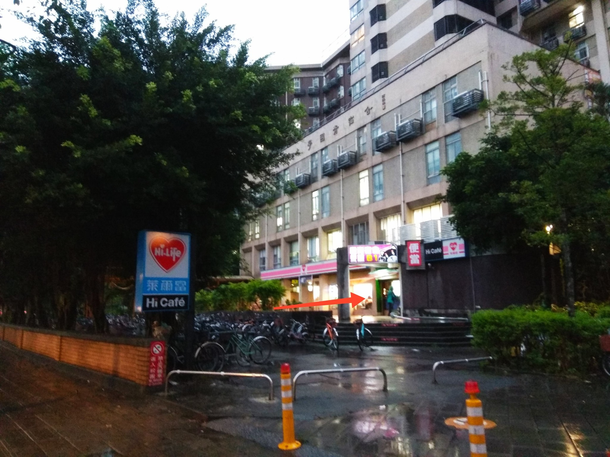
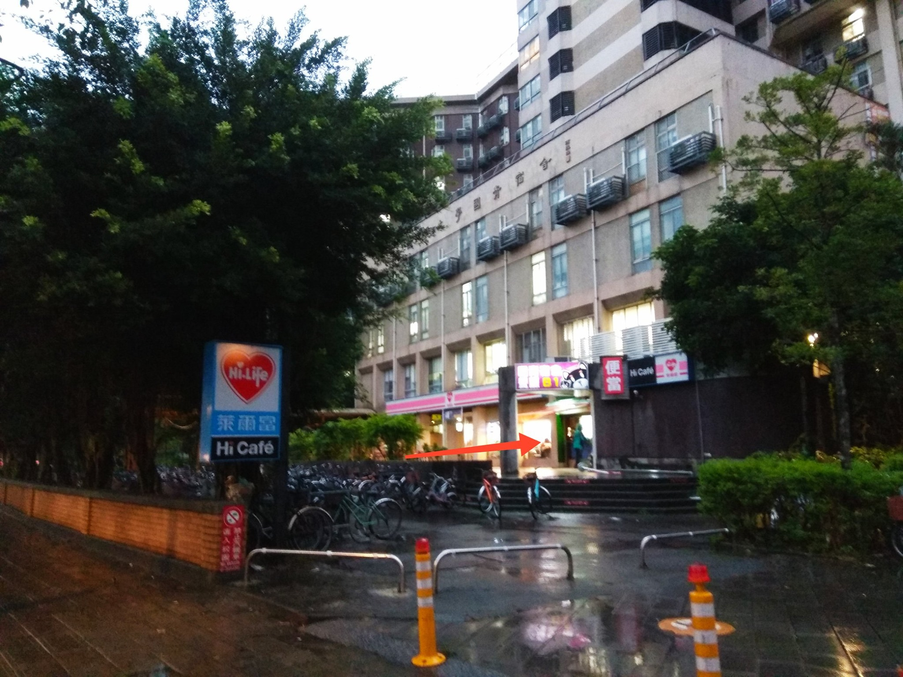

轉角哥
- 地點: 長興街
- 營業時間: 宵夜時段
- 食物類型: 滷味、炸物、飯、麵
- 熱門品項: 炒飯、炒麵
- 主打特色: 最有台味的宵夜、中英文菜單、幾乎365天不缺席
- 粉專文章連結GO>>
入夜後的長興街是熱鬧的，一輛又一輛的宵夜車為長興街的宿生提供溫暖和美食。不論是社團活動後回來的人，還是深夜K書想吃宵夜的人都能在長興街上找到溫飽。就像深夜食堂真人版一樣，每天晚上7點準時在長興街開始營業 ，售賣滷味、炸物和炒飯。他說是轉角哥，本來是在基隆路/長興街轉角擺攤，故被學生稱為轉角哥，後來索性掛上轉角哥招牌。據說因為被檢舉的關係，後來移到長興街裡面一點，但大家仍習慣稱他為「轉角哥」。
轉角哥和我們分享原先在台科大擺攤，不過在十多年前組由台大的學長推薦後，轉由到長興街擺攤。轉眼就十多年了，看過無數台大宿生畢業的他，看過無數的趣事，也不能和我們一一分享。為人熱情的轉角哥也十分願意傾聽大家的心事，所以也很常看到有同學在攤邊邊聊邊吃。
轉角哥的攤位雖小，但五臟俱全，各式各樣的滷味、炸物食材讓你選擇困難。他還貼心地附上了中英文的菜單，讓外國的宿生也可以享受到最有台味的宵夜!說到轉角哥最有名的菜式，一定是炒飯和炒麵啦。每次有人點的時候，長興街上都會漂起陣陣的香氣。很難想像轉角哥是如何用如此小的鍋炒出一份鍋氣十足的炒飯。
令人震驚的是除了過年跟颱風天之外，轉角哥的攤位幾乎每天營業，每天都為大家送上美食，不用怕假期宿舍餐廳不開，不用怕入夜沒有東西吃。長興街的深夜食堂 – 轉角哥每天都在默默炒著那份溫暖人心的飯。
福州乾拌麵簡餐
- 地點: 我家廚房(男一宿舍區)
- 營業時間: 中午11:00~14:00; 晚上17:00~20:00(每日營業)
- 食物類型: 中式乾/湯麵食、飯食簡餐
- 店內招牌: 鍋燒麵、牛肉麵、乾拌麵
- 粉專文章連結GO>>
福州乾拌麵位於男生舍區的「我家廚房」，在此經營已近四年之久，菜單從牛肉麵、乾拌麵到水餃、辣子雞丁飯，應有盡有，對懶得走遠覓食的朋友來說實在方便。
飯類各項簡餐為80元左右，而麵類品項豐富，還分成小、中、大三種size讓人自由選擇，從35元到110元不等，在天龍國內算是十分親切了，不論你是小鳥胃還是大食客，都能在這裡飽餐一頓！
問起店內是否有主打餐點，老闆娘親切的跟我們說，最近他們新增了許多本來沒有的餐點，例如最近正推廣的牛肉麵、鍋燒麵等，此外也把本來就有的單點菜改成簡餐，更賣起了滷肉飯，不斷推陳出新，就是希望讓學生有更多選擇，但最受歡迎的，還是招牌上的「福州乾拌麵」！
閒聊中老闆娘提到，他們夫妻倆原本在外面開店，當時來電的客人也是以學生為主，常常休假的日子都會邀請學生來家裡，煮一桌拿手家常菜請大家吃。經營許久，本來已經準備退休了，但耐不住學生主顧們的請求，因此才轉而來台大繼續經營。
福州乾拌麵除了三節以外全年無休，餐點也都是新鮮現煮，偶爾甚至會主動幫學生加菜加蛋，即使過了８點的打烊時間，同學若是肚子餓了過來，也都會盡量煮給他們吃，因此常常都是整個我家廚房中最晚休息的。對老闆夫婦而言，學生就像自己的孩子一樣，落腳台大經營，最希望的就是讓學生們能「吃的飽又省錢」，並讓更多台大同學品嘗到他們用心準備的餐點，歡迎大家多多來品嘗！
台大農場農產品展示中心
- 地點: 新月台旁
- 營業時間: 週一至週五08:00-18:00、週六日09:00-18:00
- 販售商品: 台大自營工廠商品（麵包廠、冰棒廠、牧場）、各地農會的農產品
- 熱門品項: 鮮奶、麵包
- 主打特色: 麵包蛋糕皆無添加防腐劑、農產品具檢驗證明
- 粉專文章連結GO>>
農產品展示中心位在新月台面對農業陳列館側的樓梯上。以販售台大自營工廠及各式農產品為主，主打經標準合格檢驗之食物食品、無防腐劑，吃的健康又安心且新鮮。
店員熱情的向我們說明，台大目前自營包含了麵包廠、冰棒場、牧場等，而店內的人氣商品包含了台大鮮奶、麵包、蛋糕，皆是當天由工廠直送。
麵包以古早風味為特色，口味隨麵包師傅不定期推出，基本款麵包價格18元與25元的則為固定商品，吐司蛋糕等不定時販售，皆不添加防腐劑，希望讓同學吃得健康。但也因如此，存放期限短，店員說夏天時常不定時的在下午以買一送一的促銷活動將即期麵包等銷售出去，避免食物過期而浪費。而店員向我們推薦「起士核桃麵堡」、「清蛋糕」為人氣商品，往往迅速的銷售一空，想要嚐嚐的同學要抓好時機啊！
那目前店內主打期間限定商品是牛軋糖！想吃的同學真的不要錯過啦
而小編也發現因為地理位置的關係，許多人不曉得這裡也有販售台大鮮奶、台大優酪乳，因此錯過了巔峰時間還是可以買得到的喔！所以在這冷冷的天氣起不來排隊買牛奶也不要氣餒，可以來新月台的農產品銷售中心逛逛，說不定還能夠在早上喝上一瓶最優質好喝的牛奶！

廣東鴨莊
- 地點: 我家廚房(男一宿舍)
- 營業時間: 中午11:00~14:00; 晚上17:00~20:00(每周日休)
- 食物類型: 港式燒臘
- 價位: 70~100元
- 招牌餐點: 招牌飯、三寶飯、叉燒飯
- 粉專文章連結GO>>
男宿區我家廚房最右手邊的攤位，這間不斷飄散著燒肉香味，讓人聞著聞著肚子都餓了的，正是「廣東鴨莊」！
廣東鴨莊剛進駐台大不久，是間典型的港式燒臘店。和台大周遭許多動輒百元的港式燒臘店相比，廣東鴨莊的價格親民，品項也不少，對食量通常較大的男宿居民們而言是午晚餐的好選擇，也是值得大家開拓的新天地。攤位前的玻璃櫃上掛著一串一串的雞腿、燒肉、香腸等，光是看著都令人口水直流，午餐時段再配上燒肉香味，簡直不能忍！
老闆大哥話不多，我們詢問店內主打哪些餐點，他酷酷的回答我們，「招牌飯、三寶飯、叉燒飯」。喜歡吃燒臘吃飽飽的大家，不妨來男宿區走走，嚐嚐廣東鴨莊的招牌菜們，拓展你們的口袋清單啦！

早餐吧
- 地點: 我家廚房(男一宿舍)
- 營業時間: 平日6:00~13:30/假日7:00~13:30
- 食物類型: 中西式早點(三明治、法式吐司、蛋餅、河粉等)
- 價位: 20~75元)
- 品項概覽: 鐵板麵、起司蛋餅、法式吐司
- 主打特色: 品項多元、經濟實惠
- 粉專文章連結GO>>
我家廚房的早餐吧是男生舍區中唯一一家的早餐店，正所謂一日之計在於晨，早餐吧溫暖的早餐，照亮了無數宿生的早晨，讓他們在上課飽餐一頓。
早餐吧的品項很多，除了最經典的蛋餅和吐司之外，早餐吧還有河粉、抓餅、鐵板麵。連帶口味來計算的話，早餐吧有多達數十種早餐可以選！難怪每天早上都可以看到很多學生在餐牌前思考。
而除了品項很多之外，餐點的價錢也十分的經濟優惠。由二十塊到五十塊不等，而且還有套餐優惠，65塊就可以有鐵板麵加蛋還有一樣配菜，最後還有飲料，這個份量，抵兩餐都不是問題阿！
 

常嚐樂小吃部
- 地點: 國青研三宿舍一樓（萊爾富旁）（靠辛亥路側）
- 營業時間: 週一至週六（週六僅提供午餐）; 早上7:00開始營業、
午餐供應時間11:00-14:00、晚餐供應時間17:00-19:30 - 食物類型: 早上有三明治、漢堡、蛋餅; 中午晚上有便當（一主菜三配菜）、炒飯、水餃
- 價位: 50~80元
- 熱門品項: 控肉便當、雞腿便當
- 主打特色: 不加味精、當天現煮
- 粉專文章連結GO>>
國青研三宿舍位處台大校園邊緣，恐較少同學知道這邊開了一家萊爾富和小吃部。老闆笑說這裡是邊疆地帶，非常需要大家多多幫忙宣傳。
常嚐樂小吃部開在國青研三宿舍的一樓靠辛亥路側。提供各種外帶餐點。
老闆之前作餐廳作了十年，直到有位朋友在台大開店，並介紹老闆可以來台大開店，老闆才在今年2020年的六月接下這個店面，開始經營。老闆說他開店是希望能給學生高CP值的餐點吃。而他強調他的餐點絕對不加味精，而且也都是當天現煮，不會使用隔夜飯菜。
店在早上七點開始營業，提供漢堡、三明治、蛋餅早餐。午餐和晚餐則是便當、燴飯、炒飯、水餃。賣的最好的是80元的便當，便當有一個主菜加三個配菜，主菜和配菜每天都會調整，讓大家可以吃到不一樣的口味。主菜會有：招牌控肉、馬鈴薯燉肉、滷雞腿、打拋豬、炸雞排、炸雞腿、滑蛋雞丁、糖醋雞排等等。其他像是肉絲炒飯、肉絲炒麵、水餃10顆、麻辣鴨血，價格皆為50元。

菓然式
- 地點: 女酒宿舍餐廳二樓
- 營業時間: 10:30~19:30
- 食物類型: 水果、果汁
- 價位: 35~60元
- 熱門品項: 木瓜牛奶、香蕉牛奶、38元水果盒
- 主打特色: 平價水果
- 粉專文章連結GO>>
位在女九餐廳二樓的菓然式，販售水果與水果飲品。
水果區依照不同的季節，會有不同的水果。像台大學餐王這次去就看到在賣香蕉、蘋果、芭樂、火龍果、木瓜、橘子。同學若想吃水果，不一定要到外面買，位在校園內的女九就可以買到了！另外，菓然式也提供水果盒，將五種不同的水果削皮、切塊裝在一起，讓想吃水果的同學能方便食用，價格是38元。依照不同的季節，水果盒也有不同的品項——夏天有西瓜、鳳梨、芒果；冬天有蘋果、橘子、木瓜、火龍果。
果汁區則提供原汁系列和果汁牛奶系列，價格主要是40元和50元，和校園外的店家比起來，是較為平價的價格。
店員提到，飲料賣的最好的是木瓜牛奶和香蕉牛奶。另外水果盒也有不錯的銷量。而店裡也會提供各種折扣，舉凡是飲料同價位合購兩杯可以折抵10元，或是不定時的「今日特價」能把原先50元的商品降價為38元。
若想找一間地點不遠，價格也比較平價的水果店，可以來女九二樓的菓然式看看！

左爺爺MR. TSUO
- 地點: 男七迦南餐廳一樓
- 營業時間: 10:30~13:30
- 食物類型: 飯食簡餐、低GI餐點
- 價位: 65/80/100元
- 品項概覽: 飯食簡餐、低GI餐點、經濟特餐
- 主打特色: 平價低GI餐點
- 粉專文章連結GO>>
沿著長興街直走，跨過主要男宿舍區，就會在右手邊看到一棟獨立的男七宿舍，而一樓便是男七「迦南餐廳」。這座這麼神秘的宿舍到底有什麼美食呢。因為位置有遠和隱密，不過這裡的食物一點也不馬虎!加上餐廳位置也很多，下次如果不想在繁忙時間和人搶位置的話，可以考慮一下男七的隱世學餐喔!
迦南餐廳目前經營者為左爺爺集團，主要供應飯食。菜單價格簡單明瞭，就分成三類三種價位，分別是：
-65元經濟特餐，菜色每日變換，可以先問店員。
-80元精選套餐，以雞、豬肉為主菜，如椒麻雞飯、招牌腿庫飯等。
-100元健康低GI便當，以水煮食材為主，如鯖魚、水煮雞胸肉等，搭配水煮蛋。菜單上還貼心為每種餐點標示卡路里。
低GI便當在這幾年成為潮流，以此為噱頭的餐廳陸續開起，然而在台大內經營此類餐點的餐廳卻寥寥無幾，因此迦南餐廳提供低GI餐點自然成了其特色；此外，和外面同類餐點相比，百元的價格的確平價親人。對比起公館對則就要一百二十元起跳的同類料理，迦南餐廳可說是性價比之王。而最多人點的莫過於，水煮雞肉飯，簡單的調味可以吃雞的原味，各種蔬食配菜可以讓你保持健康，追求健康又不想傷到錢包的同學千萬不能錯過喔!
迦南餐廳餐點選項多元，用餐環境佳，喜歡飯食、或有健康餐點需求的朋友，歡迎到男七晃晃，享用美味餐點！

玉珍圜玉珍圜
- 地點: 卓聯商場
- 營業時間: 10:00~19:00
- 食物類型: 飲料
- 價位: 25~75元
- 品項概覽(M/L): 黑糖粉圓鮮奶60/70元、芋頭鮮奶Q70/80元、冬瓜鮮奶60/70元、
冬瓜青茶40/50元、小芋圓鮮奶茶55/65元、黑糖薑母茶55/65元、
蜂蜜檸檬40/50元、茉香綠茶25/30元、嚴選美式55元…… - 主打特色: 新鮮食材、健康安全、各種原料自己熬!
- 粉專文章連結GO>>
玉珍圜是位在卓聯商場二樓的飲料店，褐色系的櫃臺搭上六個小黑板，給人一種溫暖、親人的感覺。
黑板上頭寫有「鮮奶」、「鮮奶茶」、「鮮冬瓜」，這些「鮮」字是老闆堅持的精神。老闆強調玉珍圜使用的食材都是新鮮的，另外像是糖水、冬瓜、粉圓等等也都是自己用原料熬煮而成，皆為手工製作的真材實料。老闆說，當初在羅東開店最主要的精神便是高品質，要求自己賣的飲料要夠新鮮、夠真實、夠安全，是敢拿給家人喝的那種。
老闆的第一家店開在羅東，經營七年後開了第二家店就在台大。老闆說，因為自己不像其他連鎖店品牌那麼知名，剛開始進駐台大校園時較為弱勢。甚至剛開店的時候，有一群阿公阿嬤以為玉珍圜是家餐廳，還跑來問有賣什麼吃的。不過後來這些阿公阿嬤喝了店裡的芋頭系列、薑汁系列飲品，反而號召了不少朋友來，成為開店前期重要的客群。
老闆說黑糖粉圓鮮奶、芋頭鮮奶Ｑ、冬瓜系列的飲品都蠻受歡迎的。老闆有自信的說，相信客人只要喝過他們的飲品，有很高的機率都會再回來買。因此店內最近有推出一些優惠活動希望可以讓學生們嚐鮮看看，目前12月的優惠活動有兩個：第一個是任選2杯88折、第二個是週一到週五14:30-17:30點飲料，加料不用錢。另外出示台大、台科大、師大的證件一直以來都有9折的優惠。

品軒樓
- 地點: 卓聯商場二稜
- 營業時間: 中午：11:00-13:30 （通常10:45就開始囉);
晚上：17:00-19:30（通常16:45就開始囉） - 食物類型: 中式料理(自助餐、簡餐、合菜)
- 招牌菜色: 滷雞腿、馬鈴薯絲、涼拌木耳
- 粉專文章連結GO>>
位在卓聯商場二樓較隱密位置的品軒樓，其實原先開設於鹿鳴堂的中式餐廳，而在卓聯商場開幕後，除了延續原有的餐廳之外，更新增了自助餐的選項，讓學生們也能以便宜的價格嚐到豐富多樣、且經大廚料理的菜色。
老闆向我們提到，品軒樓自助餐中午與晚上的品項與販售方式有些不同。中午會採一般自助餐廳形式，供客人自行夾菜。至於晚餐時段，則會改在門口以類似簡餐、便當形式進行販售，採一主菜三菜共85元，提供多樣主菜與12道菜供選擇，且加飯不加價。對於喜歡多樣菜色、食量大或趕時間的同學們是個很棒、很划算的選擇！
品軒樓的老闆與職員們待人相當熱情，這邊的菜色也非常多樣，特別強調是餐廳大廚一道道料理出的美味佳餚，希望同學們能以便宜的價格品嚐到餐廳等級高品質的美食！老闆對於環境整潔與食物品質的要求相當高，所以大家可以放心的享用。
另外，老闆也想向大家說明，因為在卓聯「商場」的緣故，必須繳納較高的稅金與租金，所以品軒樓自助餐的收費會相較於校內其他自助餐高一些些，但裡頭承載的滿滿心意絕對不會讓同學們失望的。
非常歡迎大家前來品嚐！
湘之坊
- 地點: 研一宿舍地下室
- 營業時間: 11:30~19:00
- 食物類型: 炒飯
- 價位: 55~75元
- 品項概覽: 招牌炒飯55元、火腿炒飯60元、泡菜炒飯65元、
肉絲炒飯65元、豬排炒飯70元、總匯炒飯75元…… - 主打特色: 經濟實惠
- 粉專文章連結GO>>
從捷運公館站2號出口經過舟山路走到大一女宿舍旁的研一宿舍，共有兩個入口可以走進地下室，其中一個是從研一入口處，另一個則是從研一與大一女之間的入口處。
湘之坊開在研一地下室，位在販售日常雜貨的合作社對面。店家的空間儉樸、不大，且較為安靜，和大一女熙攘的人潮形成強烈的對比。
菜單貼在牆壁上，全部都是炒飯、專賣炒飯。共有14種口味的炒飯，價格為55元-75元不等，可以說是非常的便宜。
阿姨說，店長開店的精神是希望能提供學生一個不會讓經濟負擔太重的店，雖然說種類不像大一女那麼多樣，但這邊提供的炒飯價錢比較便宜且份量給的較多，走的是薄利多銷的路線。從菜單上的價錢與貼在一旁的標示上寫著「炒飯加量不加價」，頗能驗證阿姨提到的開店精神。
我們詢問阿姨店內的招牌是什麼？阿姨思索了一陣子，開玩笑地說：「如果真的要說，那當然是講價格最貴的總匯炒飯囉！」。總匯炒飯裡有叉燒、香腸、培根，內含豐富的肉類，價格是75元。阿姨接著說：「沒有啦，學生點的項目很不固定，就是看他們口味是什麼樣子，不會說有哪個是招牌或哪個特別熱銷。」我們詢問那招牌炒飯是什麼？阿姨說招牌炒飯主要是青菜，基本上有高麗菜和紅蘿蔔，還有依照季節的不同添加一些像是金針菇、杏包菇的菇類進去，價格是55元。
阿姨表示，店的位置可能比較不容易看見，希望大家能知道研一地下室其實是有開一間賣炒飯的店。而有不少人是因為來地下室的合作社影印東西，才知道這邊有賣吃的。
阿姨說，這邊的環境比較安靜，價格比較便宜、份量比較大，給人一種家常的感覺，希望喜歡這種風格的同學可以來光顧看看。這陣子都有買炒飯送紅茶的優惠活動，歡迎大家來！